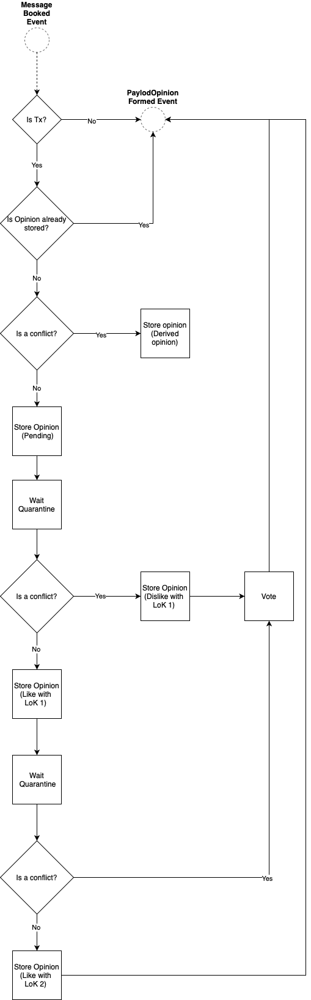

Consensus Mechanism
The consensus mechanism is necessary to achieve agreement among the nodes of the network. In case of a double spend, one way to decide which transaction should be considered valid would be to order them and pick the oldest one. However, the Tangle is only partially ordered. To tackle this problem in the context of the Tangle, we have designed an open and leaderless consensus mechanism. It combines a binary voting protocol (FPC) used as a pre-consensus to prevent metastable states, and a virtual voting protocol (Approval Weight) that provides finality similarly to the longest chain rule in Nakamoto consensus (i.e., heaviest branch).
FPC
The Fast Probabilistic Consensus (FPC) protocol is a binary voting protocol where each node starts with an initial opinion (a nulled boolean) on an object. Nodes then exchange queries and responses about their opinions during several rounds, until each node terminates with a final boolean value.
FPC votes on two specific objects types: messages, in order to enforce timestamps (currently not yet enabled in GoShimmer), and transactions, in order to decide double spends. Additionally, applications can use FPC to query opinions about their opinion on other object types, although there is no guarantee that they will get a response.
The FPC is agnostic about the rest of the protocol, particularly when FPC should run and how the initial opinions are set. Deciding when FPC should run is a delicate question for two reasons.
- It is inefficient for FPC to vote on every single transaction.
- If only a sub set of nodes participate in FPC, they are more vulnerable to attack since the consensus mana held by this collection of nodes is potentially much smaller. Thus, since it cannot vote on everything, it must use subjective criterion to trigger voting which does not leave any group vulnerable to attack.
For these reasons, we use FCoB to manage FPC.
FCoB
The following flow diagram shows the current implemention of the FCoB protocol.

Each opinion is associated to a Level of Knowledge (LoK) that defines how confident a node is with respect to the value of the opinion. We can distinguish 3 levels:
- Level 1 means that the node only knows that it holds this opinion.
- Level 2 means that the node knows that all nodes have this opinion too (with high probability).
- Level 3 means that the node knows that all nodes have level 2 knowledge (with high probability).
Within FCoB, there are three cases which are treated:
- No conflicts have been detected
- Conflicts have been detected but have been rejected
- Conflicts have been detected are either pending or have been confirmed
In Case 1 is the most common because conflicts will never arrive for most transactions. Without conflicts, the opinion can be only set provisionally since it might change if a conflict arrives later. The opinion is set to true, but the level is set as if a conflict arrived at that time. For example, after a given Quarantine time has elapsed since arrival time, if a conflict does arrive the opinion will remain true with level at least 2.
Case 2 is an important special case of the FCoB rule. To see the need for this modification consider the following example. Suppose someone issues a pair of conflicting transactions where both transactions are rejected by FPC. Then, if someone ever issues a new transaction consuming those funds, FCoB, strictly speaking would reject the new transaction, since it would conflict with a previous transaction. Thus, if a pair of double spends are rejected, the funds would be locked. This is undesirable and impractical behavior: an honest but malfunctioning wallet can issue double spends. Moreover, tracking the locked funds would be onerous.
Case 3 is the simplest case: since conflicts have been detected, we set the opinion according to the FCOB rule. Then level is set according to the difference of transaction.arrivalTime + Quarantine and conflictTime, the oldest arrival time of a conflicting transaction. Essentially, the level measures how many network delays there are between these two values.
To prevent the FCoB rule from locking funds, we modify it to the following: a transaction X satisfied the FCoB rule if all transactions Y conflicting with X before arrivalTime(X)+Quarantine has been rejected, i.e. has has opinion false and level 2 or 3. With this rule, any conflicts which are rejected will not affect the opinion on future conflicts. For simplicity case, all transactions falling under this case are treated as level 1.
FPC statements
The FPC protocol requires nodes to directly query randomly selected nodes for conflict resolution. However, the information produced during such a voting mechanism is not stored in the Tangle, rather only lives within the node's local metadata. This can be a problem for nodes joining the network at a later stage, specifically when a conflict is considered marked as level of knowledge 3 by the majority of the network, a new node cannot query it anymore. Moreover, since the quorum to query is randomly formed proportionally to cMana, the highest cMana nodes would need to reply to too many queries, as their probability to be included in the quorum of each node is high. We propose an optimization of the protocol that, in turn, should solve both of the above issues. The idea is to let each node be free to choose whether writing its opinion on a given conflict and a given FPC round on the Tangle.
Payload
We need to first define the FPC Statement payload:
type Statement struct {
ConflictsCount uint32
Conflicts Conflicts
TimestampsCount uint32
Timestamps Timestamps
}
type Conflict struct {
ID transaction.ID
Opinion
}
type Timestamp struct {
ID tangle.MessageID
Opinion
}
Registry
We also define an Opinion Registry where nodes can store and keep track of the opinions from each node after parsing FPC Statements.
type Registry struct {
nodesView map[identity.ID]*View
}
type View struct {
NodeID identity.ID
Conflicts map[transaction.ID]Opinions
Timestamps map[tangle.MessageID]Opinions
}
Given a nodeID and a ConflictID (or a messageID for timestamps), a node can check if it has the required opinion in its registry, and thus use that during its FPC round, or if not, send a traditional query to the node.
Broadcasting an FPC Statement
A node, after forming its opinion for 1 or more conflicts during an FPC round, can prepare an FPC statement containing the result of that round and issue it on the Tangle. Currently, any node that belongs to the top 70% cMana issues FPC statements. This parameter is local to the node and can be changed by the node operator.
dRNG
At its core, the Fast Probabilistic Consensus (FPC) runs to resolve potential conflicting transactions by voting on them. FPC requires a random number generator (RNG) to be more resilient to an attack aiming at creating a meta-stable state, where nodes in the network are constantly toggling their opinion on a given transaction and thus are unable to finalize it. Such a RNG can be provided by either a trusted and centralized entity or be decentralized and distributed. Clearly, the fully decentralized nature of IOTA 2.0 mandates the latter option, and this option is referred to a distributed RNG (dRNG).
A dRNG can be implemented in very different ways, for instance by leveraging on cryptographic primitives such as verifiable secret sharing and threshold signatures, by using cryptographic sortition or also with verifiable delay functions. After reviewing some existing solutions, we decided to use a variant of the drand protocol, originally developed within the DEDIS organization, and as of December 2019, is now under the drand organization. This protocol has been already used by other projects such as The League of Entropy.
Drand - A Distributed Randomness Beacon Daemon
Drand (pronounced "dee-rand") is a distributed randomness beacon daemon written in Golang. Servers running drand can be linked with each other to produce collective, publicly verifiable, unbiased, unpredictable random values at fixed intervals using bilinear pairings and threshold cryptography. Drand nodes can also serve locally-generated private randomness to clients.
In a nutshell, drand works in two phases: setup and generation. In the setup phase, a set of nodes (hereafter referred as “committee”) run a distributed key generation (DKG) protocol to create a collective private and public key pair shared among the members of the committee. More specifically, at the end of this phase, each member obtains a copy of the public key as well as a private key share of the collective private key, such that no individual member knows the entire collective private key. These private key shares will then be used by the committee members to sign their contributions during the next phase. The generation phase works in discrete rounds. In every round, the committee produces a new random value by leveraging on a deterministic threshold signature scheme such as BLS. Each member of the committee creates in round r the partial BLS signature σ_r on the message m=H(r || ς_r-1) where ς_r-1 denotes the full BLS threshold signature from the previous round r−1 and H is a cryptographic hash function. Once at least t members have broadcasted their partial signatures σ_r on m, anyone can recover the full BLS threshold signature ς_r (via Lagrange interpolation) which corresponds to the random value of round r. Then, the committee moves to the next round and reiterates the above process. For the first round, each member signs a seed fixed during the setup phase. This process ensures that every new random value depends on all previously generated signatures. If you are interested in knowing more about drand, we recommend you to check out their Github repository.
Approval Weight (AW)
Approval weight represents the weight of branches (and messages), similar to the longest chain rule in Nakamoto consensus. However, instead of selecting a leader based on a puzzle (PoW) or stake (PoS), it allows every node to express its opinion by simply issuing any message and attaching it in a part of the Tangle it likes (based on FCoB/FPC). This process is also known as virtual voting, and has been previously described in On Tangle Voting.
If a node realizes its opinion according to FCoB/FPC differs from that of the majority of weight, it has to do a reorg of its perception according to the heavier branch. In that way, all nodes will eventually converge to the heaviest branches, and, thus, come to consensus efficiently.
AW also serves as a probabilistic finality tool for individual messages and their payloads, i.e., transactions.
Finalization
Finality must always be considered as a probabilistic finality in the sense that a message is included in the ledger with a very high probability. Two qualities desired from a finality criteria are fast confirmation rate and a high probability of non-reversibility.
A branch is considered finalized/confirmed if one of the following holds:
- It is the MasterBranch.
- Its approval weight is at least 0.5 higher than any of its conflicting branches.
A message is considered finalized/confirmed if the following holds:
- Its approval weight is higher than 0.5, and its branch is confirmed.
Conversely, a message that does not gather enough AW will not be finalized, and, thus, will be pending until it might be orphaned if not reachable via current tips anymore.
Detailed Design
Approval weight is tracked with the help of supporters that cast votes for branches and messages by means of making statements. This is necessary due to the changing nature of cMana over time, which prevents simply counting the AW per branch or message.
Definitions
- Statement: A statement is any message issued by a node, expressing its opinion and casting a (virtual) vote. It can be objectively ordered by its timestamp, and, if equal, its message ID.
- Branch supporter: A branch supporter is a node that issued a statement attaching to a branch, and, thus, voting for it.
- Marker/message supporter: A marker/message's supporter is a node that issued a statement directly or indirectly referencing a marker/message, including its issuer.
Branches
Tracking supporters of branches and following the heavier branch effectively is On Tangle Voting. It allows nodes to express their opinion simply by attaching a statement to a branch they like. This statement needs to propagate down the branch DAG, adding support to each of the branch parents. In case a supporter changes their opinion, support needs to be revoked from all conflicting branches and their children. Thus, a node can only support one branch of a conflict set.
To make this more clear consider the following example:

The green node issued statement 1 and attached it to the aggregated branch Branch 1.1 + Branch 4.1.1. Thus, the green node is a supporter of all the aggregated branch's parent branches, which are (from top to bottom) Branch 4.1.1, Branch 1.1, Branch 4.1, Branch 1, and Branch 4.
Then, the green node issued statement 2 and attached it to Branch 4.1.2. This makes the green node a supporter of Branch 4.1.2, however, Branch 4.1.1 is its conflict branch and thus support for Branch 4.1.1 has to be revoked.
Branch 4.1, Branch 4 are parent branches of Branch 4.1.2, which the green node is still supporting. Since Branch 1.1, Branch 1 are not conflicting to either of Branch 4.1.2's parents, the green node remains their supporter.
Finally, the green nodes issued statement 3, which is in Branch 2. Now the green node is a supporter of Branch 2, and no longer a supporter of Branch 1, since Branch 1 is conflicting to Branch 2. Note that, this supporter removal will propagate to child branches. Thus, the green node is removed from Branch 1.1 as well.
Branch 3, 4 and both of their child branches have nothing to do with this attachement, the supporter status remains.
It is important to notice that the arrival order of the statements does not make a difference on the final outcome. Due to the fact that statements can be ordered objectively, every node in the network eventually comes to the same conclusion as to who is supporting which branch, even when nodes change their opinion.
Calculation of Approval Weight
The approval weight itself is calculated every time a new supporter is added to a branch. The AW for a branch B is calculated as follows:
AW(B) = supporters(B) dot 'active cMana nodes' / 'total active cMana'
It is then evaluated whether it fulfills the finalization criterion. If so, the branch is set to confirmed, while all its conflicts are set to rejected.
Reorg: In case the node confirmed another branch of the conflict set first, e.g., because of a difference in perception of the ledger state, it will have to do reorg. This means, the node needs to adjust its perception of the ledger state, so that, eventually, all nodes converge and follow the heaviest branch by active cMana.
Markers
It would be computationally expensive to track the AW for each message individually. Instead, we approximate the AW with the help of markers. Once a marker fulfills the finalization criterion, the confirmation is propagated into its past cone until all the messages are confirmed.
Rather than keeping a list of supporters for each marker and collecting supporters for each marker (which would also be expensive), we keep a list of supporters along with its approved marker index for each marker sequence. This approach provides a simple and fast look-up for marker supporters making use of the Tangle structure as mapped by the markers.
For each marker sequence, we keep a map of supporter to marker index, meaning a supporter supports a marker index i. This implies that the supporter supports all markers with index <= i.
Take the figure below as an example:

The purple circles represent markers of the same sequence, the numbers are marker indices.
Four nodes (A to D) issue statements with past markers of the purple sequence. Node A and D issue messages having past marker with index 6, thus node A and D are the supporters of marker 6 and all markers before, which is 1 to 5. On the other hand, node B issues a message having past marker with index 3, which implies node B is a supporter for marker 1 and 2 as well.
This is a fast look-up and avoids walking through a marker's future cone when it comes to retrieving supporters for approval weight calculation.
For example, to find all supporter of marker 2, we iterate through the map and filter out those support marker with index >= 2. In this case, all nodes are its supporters. As for marker 5, it has supporters node A and D, which fulfill the check: index >= 5.
Here is another more complicated example with parent sequences:

The supporter will be propagated to the parent sequence.
Node A issues message A2 having past markers [1,4], [3,5], which implies node A is a supporter for marker [1,1] to [1,4], [2,1] to [2,3], and [3,4], [3,5] as well.
Calculation of Approval Weight
The approval weight itself is calculated every time a new supporter is added to a marker, and the marker's branch B has reached its finality criterion. The AW for a marker M is calculated as follows:
AW(M) = supporters(B) dot supporters(M) dot 'active cMana nodes' / 'total active cMana'
It is then evaluated whether it fulfills the finalization criterion. If so, the marker's message is set to confirmed as well as all messages in its past cone.
Active Consensus Mana
It is important to track the currently active consensus mana in the system, such that the AW of a given message and/or branch reflects an up-to-date measure of cumulative weight. Specifically, the system must be resilient against a long-range attack.
The active consensus mana tracks the set of the active nodes with some conensus mana. A node is considered to be active if it has issued any message in the last 30 minutes with respect to the TangleTime. The total active consensus mana is, therefore, the sum of all the consensus mana of each active node.